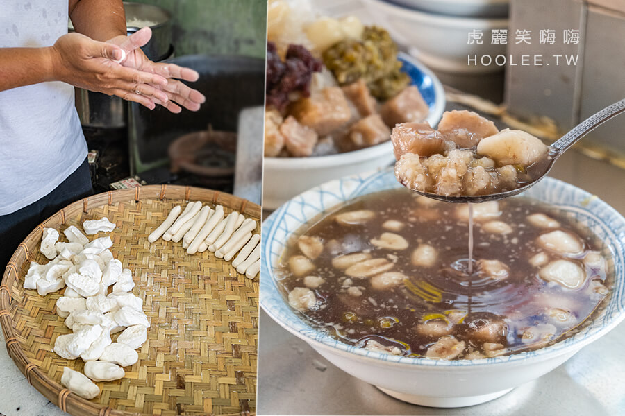
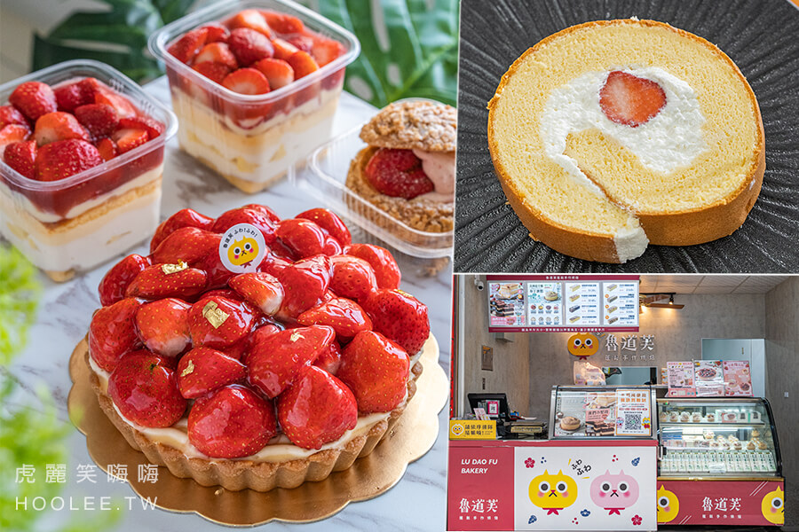
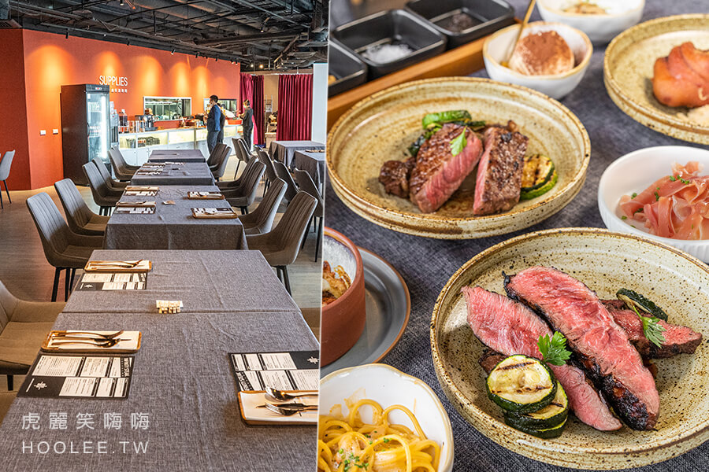

| 圖片 | 標題 | 說明 |
|---|---|---|
|  | 李家圓仔冰(高雄)傳承三代69年老店!手工自製軟Q湯圓,必吃熱呼呼圓仔湯與綜合冰 |
李家湯圓冰 是鹽埕很受歡迎的人氣甜品冰店，傳承三代已經開了69年 提供自家手工製作的湯圓、多種配料，加上特別熬煮的糖水吃起來香甜不膩，冰的熱的都很不錯。 冷冷的冬天最適合來一碗熱圓仔湯，軟Q有嚼勁的湯圓搭配綿綿帶點咬感的花生、綠豆、紅豆，薏仁、芋頭相當涮嘴，完全療癒甜食控的胃！ 喜歡吃冰就點綜合冰，一樣有豐富的自製配料，現刨清冰淋上糖水清甜爽口，相當透心涼。 (配料可依個人喜好調整) |
|  | 魯道芙蓬鬆手作烘培(高雄)爆多草莓甜點!必吃十勝舒芙蕾草莓生乳捲,滿滿草莓乳酪塔與草莓泡芙 |
魯道芙蓬鬆手作烘焙 是位於前鎮很受歡迎的甜點烘焙店 提供多款主廚嚴選高品質食材、精心製作的經典布丁蛋糕、生乳捲、泡芙、乳酪塔、磅蛋糕，選擇多樣豐富 輕鬆滿足甜食控們的味蕾。近期還有推出冬天最有人氣的草莓季甜點系列，喜歡酸酸甜甜療癒感的吃貨一定要試試！ 虎麗私心最愛「十勝舒芙蕾草莓生乳捲」，綿密柔軟的蛋糕濕潤帶有蛋香，搭配十勝四葉鮮奶、乳霜特製的生乳餡特別滑順，加上大湖直送新鮮草莓，入口爆汁帶來濃厚果... |
|  | CRIS Steakhouse 格禮氏牛排(高雄)吃到飽約會餐廳!10oz美國熟成牛排,主廚料理及自助吧無限供應 |
CRIS Steakhouse 格禮氏牛排 是前金區大立百貨很受歡迎的牛排餐廳， 全新升級為吃到飽，喜歡排餐的吃貨們可以約會衝一波了！ 格禮氏牛排提供美國熟成修清牛排、菲力牛排、美國頂級肋眼牛排、美國頂級上蓋老饕、威靈頓牛排、香煎鮭魚、戰斧豬排等主食選擇 另外還有精選排餐吃到飽、主廚現做料理吃到飽、自助吧吃到飽，種類多樣豐富，可依個人喜好選擇享用，輕鬆滿足肉控們的胃。 自助吧有冰鎮雞尾酒甜白蝦、蒜味海鮮.. |